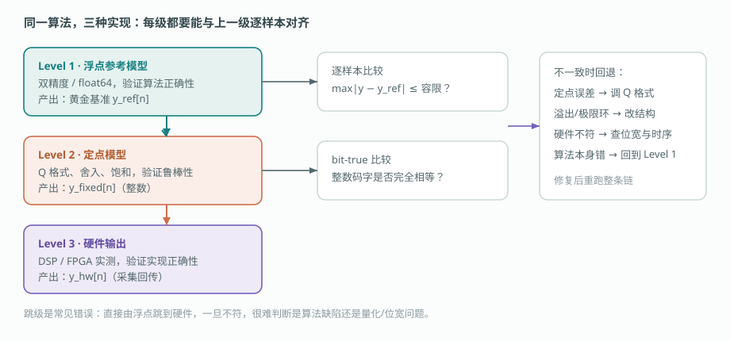
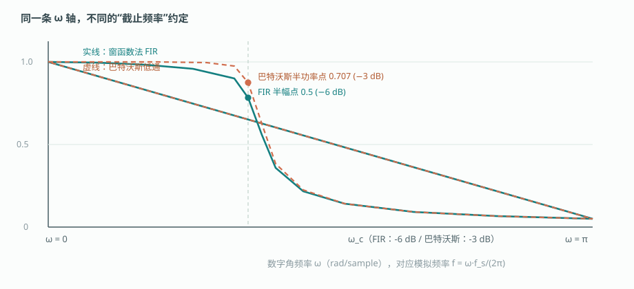

Implementation · Verification / 19
DSP 仿真：参考模型、频率约定与三级验证
同一个滤波器在浮点、定点与硬件上给出不同结果。仿真先建立“黄金基准”，再逐级比较，才能把算法缺陷与实现误差分开。
仿真到底在验证什么？
一个在纸上推导正确的滤波器，写成定点代码、烧进芯片之后可能输出噪声。问题往往不在公式，而在实现：系数量化、累加器位宽、饱和与舍入。仿真要做的，是在接触硬件之前先建立一个可以被信任的参考结果，并把“算法错”与“实现误差”分开定位。
具体可检验的问题：给定同一组滤波器系数，双精度浮点输出 y_float[n] 与 16 位定点输出 y_fixed[n] 之间到底有多大差异？这个差异是否超过半个量化步长？如果不先算出浮点参考，就无从回答，更无法判断定点实现是否正确。
因此本章把“仿真”定义为一条可比较的链路：生成或导入信号 → 施加算法 → 与上一级参考逐样本比较。数值本身不构成结论，能对齐到参考的误差才构成结论。

Python DSP 工具箱的分工
原型阶段的事实标准是 Python，但不同库承担不同职责。把职责分清，能避免“用 FFT 做本该系统设计的事”这类接口错配。
| 库 | 职责 | 典型接口 |
|---|---|---|
| NumPy | 基础数组运算、numpy.fft、线性代数 | np.fft.fft、数组广播 |
SciPy signal | 滤波器设计、频率响应、滤波、谱估计 | firwin、butter、freqz、lfilter、sosfilt |
SciPy fft | 更快的 FFT 与实数变换 | scipy.fft.rfft |
| Matplotlib | 时域 / 频域 / 语谱图可视化 | plot、specgram |
MATLAB 的 Signal Processing Toolbox 在系统级仿真（Simulink）中仍有位置。常用函数与 SciPy 基本一一对应，但频率参数约定并不总是一致，下一节专门处理这一点。
生成信号并精确控制信噪比
仿真第一步是“制造”可复现的输入。正弦、线性调频（chirp）、白噪声是最常用的三类。加噪时不要把噪声幅度写成魔数：给定信号功率 P_s 与目标信噪比 SNR（dB），噪声标准差应由公式反解。
式（1）：P_s 为信号平均功率，SNR 以 dB 计；生成后再用 10·log10(P_s/P_n) 回测，确认标定无误。
import numpy as np
from scipy import signal
fs, T = 1000.0, 1.0
t = np.arange(int(fs * T)) / fs
x_sin = np.sin(2 * np.pi * 50 * t)
x_chirp = signal.chirp(t, 10, T, 200, method="linear")
rng = np.random.default_rng(42)
noise = rng.standard_normal(t.size)
snr_db = 10.0
sigma = np.sqrt(np.var(x_sin) / (10 ** (snr_db / 10)))
x_meas = x_sin + sigma * noise频率分析用 np.fft.rfft 只算正频率侧即可。这里关心的是算法层面的频谱形状；具体窗与重叠参数需要按信号选择，没有普适最佳值。
频率轴与“截止频率”的约定
仿真里最容易出错的往往不是算法，而是频率轴。SciPy 的 freqz 默认返回数字角频率 ω∈[0,π]（rad/sample）；MATLAB 的 freqz 常以归一化频率 f∈[0,1] 给出，其中 1.0 对应 Nyquist 频率 f_s/2。两者相差一个 π 因子。
式（2）：f 为模拟频率（Hz）；f/(f_s/2) 是 [0,1] 的归一化频率，也是 firwin/butter 的 cutoff 参数。设计 200 Hz、f_s=1000 Hz 时归一化值为 0.4、ω=0.4π。
第二个陷阱是“截止频率”本身的定义：firwin 的频带边界对应 -6 dB 半幅点（幅度 0.5），而 butter 的临界频率对应 -3 dB 半功率点（幅度 1/√2）。把两者混用会带来约 3 dB 的增益误差。

ω 轴上，实线的窗函数法 FIR 在设计边界处降到约 0.5（-6 dB），虚线的巴特沃斯低通在临界频率处降到 0.707（-3 dB）。上图示意两种约定的区别，非某次具体设计的精确曲线。这一点可以用确定性程序验证：窗函数法设计、再归一化到单位直流增益的 FIR，在 cutoff 处幅度约 0.5；一阶数字巴特沃斯低通在临界频率处幅度约 0.7071。
lfilter 与 filtfilt：因果与零相位
滤波器系数只是描述，真正决定输出的是滤波方式。lfilter 实现因果差分方程：
式（3）：输出只依赖于当前及过去的输入与输出。对线性相位 FIR（a 只有 0 阶），因果滤波引入 (M−1)/2 个样本的群延迟，M 为系数个数。
filtfilt 把信号正、反各滤一次，两次相位延迟相消，得到零相位结果。代价有两条：等效幅度响应被平方（等效阶数约翻倍），而且它需要整段信号，无法用于流式实时处理。因此“离线用 filtfilt、实时用 lfilter”是一条实际约束：用 filtfilt 验证过的相位指标，转到实时链路时必须重新评估。
高阶 IIR 用二阶级联（SOS）实现更稳健：sosfilt 把高阶传递函数分解成多个二阶节，避免直接型系数对极点位置过于敏感。数值稳健不等于免除溢出与定点测试。
from scipy.signal import butter, sosfilt, filtfilt
sos = butter(6, 0.2, btype="low", output="sos")
y_rt = sosfilt(sos, x) # 因果，可用于流式
y_zp = filtfilt(sos, x) # 零相位，非因果，仅离线三级验证：浮点 → 定点 → 硬件
工业流程把同一算法做三个版本，逐级比较。这样任何不一致都能定位到具体层级，而不是在硬件上盲猜。
- Level 1 · 浮点参考：双精度实现，作为黄金基准，验证算法正确性。
- Level 2 · 定点模型：用整数模拟 Q 格式、舍入与饱和，验证有限精度下的鲁棒性。
- Level 3 · 硬件输出：芯片 / FPGA 实测回传，与定点模型做 bit-true（逐位相等）比较，验证实现正确性。
定点模型的判据来自量化误差上界。用步长 Δ 的最近邻舍入，未过载时误差绝对值不超过半个步长：
式（4）：若实测偏差远超 Δ/2 量级，首先怀疑溢出或极限环，而不是“算法本身不精确”。
def level1_float(x, sos):
return sosfilt(sos, x) # 黄金基准
def level2_fixed(x, sos_q, bits): # 定点仿真：整数 MAC
return fixed_point_filter(x, sos_q, bits)
# Level 3：硬件回采，与 Level 2 做 bit-true 比较
# err = max(abs(y_hw - y_fixed))
# assert err == 0, "逐位不等，先查位宽与时序"交互：系数量化与幅度响应
下面的实验把一段 33 点窗函数法低通（cutoff 0.35π）的系数按 Q 格式量化到指定位宽。滑块改变位数：青线是浮点参考的幅度响应，赭线是量化后的响应。位数越低，网格步长 Δ 越大，响应偏差越明显。
动手验证：选择系数量化位宽
交互仅辅助观察；FIGURE 01/02、式（3）（4）与下方的确定性程序在 JS 关闭时仍可独立理解。
# 完整可运行版（仅标准库）见 examples/19_simulation.py
h_q = [round(c * 2**15) / 2**15 for c in h] # Q15
assert max(abs(a - b) for a, b in zip(h, h_q)) <= 2**-16完整可执行例程（19_simulation.py）：断言 FIR 截止点幅度约 0.5、巴特沃斯临界点 0.7071、因果群延迟 (M−1)/2、零相位滤波峰值回到原位且支撑长度为 2(M−1)+1、Q15 量化误差 ≤ 2⁻¹⁶、SNR 标定与实测一致。
边界与失效模式
- magic number 加噪：直接写噪声幅度会隐式改变 SNR；应先用式（1）反解标准差再回测。
- 频率约定混用：
freqz的 0–π 与 MATLAB 的 0–1 相差 π；cutoff 的 -6 dB / -3 dB 定义不同，不能直接对换。 - 把 filtfilt 当实时滤波：它需要整段信号且非因果；实时链路只能用 lfilter/sosfilt。
- 高阶直接型 IIR：量化会使极点偏移、甚至移到单位圆外；优先用 SOS 并做定点验证。
- 跳过定点级：没有 Level 2，就无法区分算法缺陷与位宽/饱和问题。
自检：同一组系数下，浮点与 Q15 定点的输出差异上界是多少？为什么这个上界不能直接当作硬件实测误差的期望值？
参考资料与接口
- SciPy · Signal processing：滤波器设计、滤波与谱估计接口总览。
- SciPy · firwin：窗函数法设计，cutoff 为 Nyquist 归一化频率（-6 dB 约定）。
- SciPy · butter：巴特沃斯设计，临界频率为 -3 dB 半功率点。
- SciPy · filtfilt：前向-反向滤波与零相位，等效阶数翻倍。
- MIT OCW · Discrete-Time Signal Processing：量化、有限字长效应与滤波器结构。